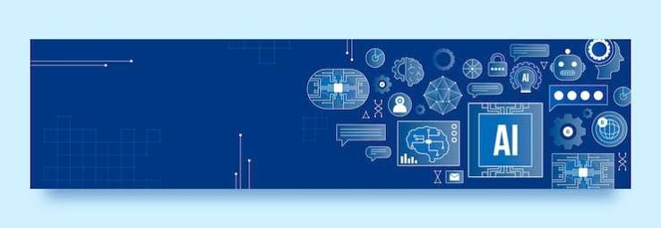
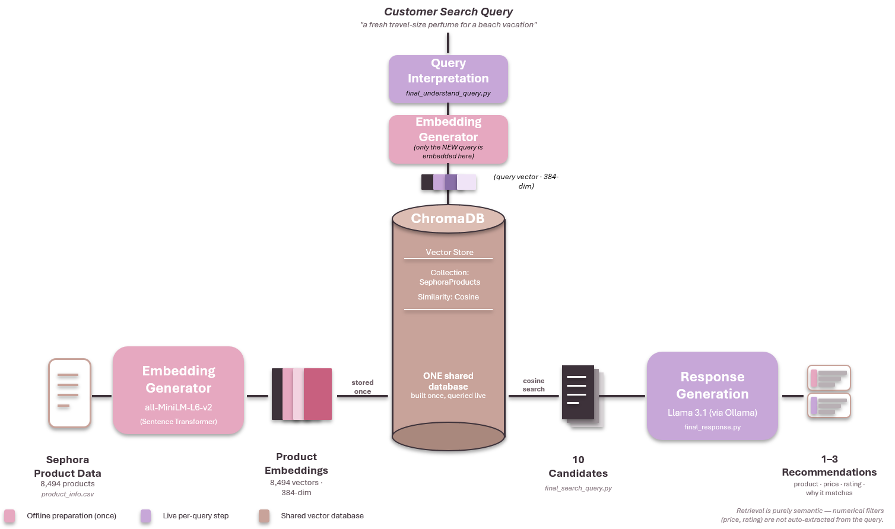

Python · SQL · R · Tableau · Power BI · Microsoft Suite
Hi, I'm Surya! Originally from Gaborone, Botswana, now studying at McGill University, where I'm pursuing a Master's in Management Analytics (MMA) after completing my undergrad in Business Analytics with a minor in Finance. I love turning data into decisions, and I'm proficient in Python and SQL, with additional experience in R and Visual Basic. I'm also fluent across the Microsoft Suite. I am fluent in English and currently leveling up my French! Outside of analytics, you'll find me exploring fashion and beauty trends and trying to study the intersection. In fact I am conducting independent research on the intersection of fashion and beauty, and how it can be leveraged to improve business outcomes. Right now, I'm working as a research assistant on two exciting projects: one exploring fintech in Africa, where I co-lead the research, and another looking at AI in recruitment, where I support the research process.
I hope to use my skills and experiences in the world of beauty and fashion analytics, but I am always open to new opportunities!
See my current research work.

See my analytics and coding projects.
Fintech in Africa : Leading research on fintech adoption and trends across Africa.
AI in Recruitment : Supporting the research process for a project studying AI in hiring.
Vector Databases in the Beauty Industry : MMA Independent Research Project which studies the application of vector databases in the beauty industry. See the project below.
84% of South African adults have a bank account, yet most remain poorly served by the five banks that dominate the market. This report argues that Revolut should win there by being different, not just cheaper. It recommends using the PayShap instant-payment system to undercut the big banks' foreign exchange margins and build trust before its banking licence arrives, and launching a stablecoin remittance corridor for the UK–South Africa diaspora.

A beauty product recommender that understands natural-language requests like "a warm, cozy perfume for winter evenings". It searches 8,494 Sephora products by meaning using vector embeddings in ChromaDB, then uses a locally run Llama 3.1 model to recommend and explain the best 1–3 matches.
More analytics projects will be added here as I complete them in the MMA program.